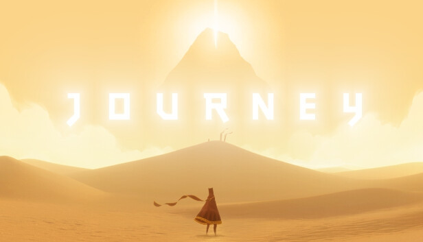
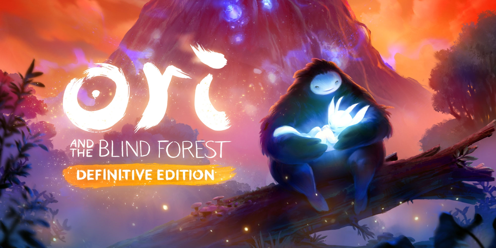
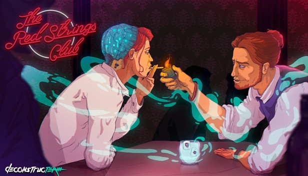
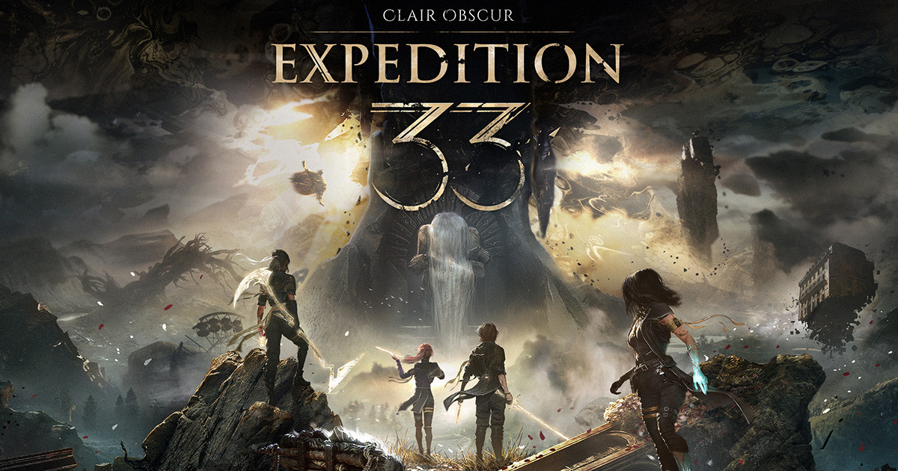
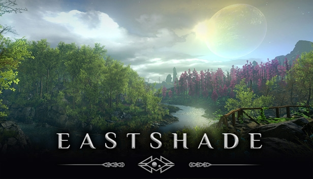
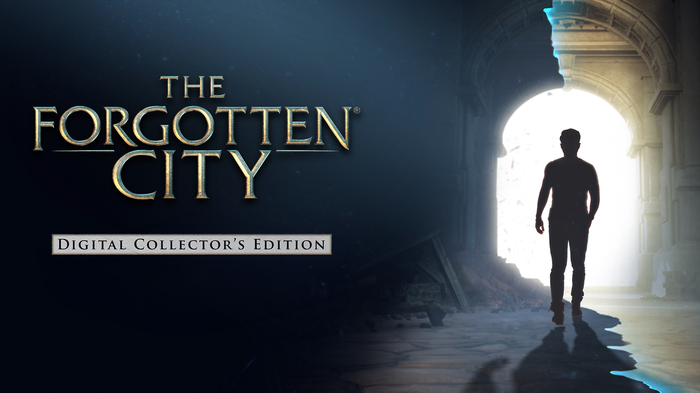
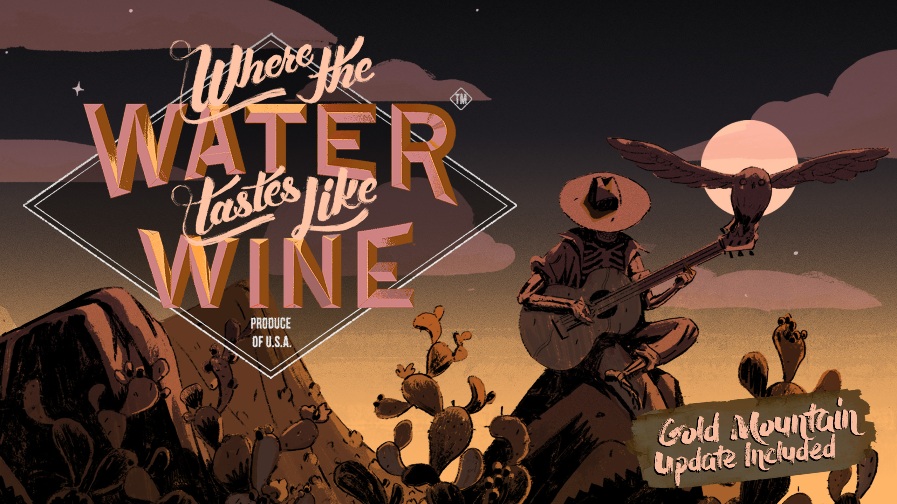

Émerveillement

Articles

Récit tranquille et bienveillant d’une randonnée vers soi.

Raconter, peindre, s’émerveiller sans conflit.

Intimité et contemplation au cœur de la nature.

Une pause dans une vie mouvementée, portée par le récit épistolaire.

Des jeunes en fuite dans un monde politique instable, avec plusieurs récits croisés.

Une pause dans une vie mouvementée, portée par le récit épistolaire.

Vieillir dans la solitude, au rythme des saisons.

Voyager pour capturer les souvenirs d’un monde voué à disparaître.

Une boucle temporelle dans la Rome antique, pleine de mystère.

Une aventure narrative à travers les États-Unis mythiques, centrée sur le pouvoir des histoires.